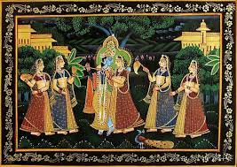

RAJASTHAN

The origin of Rajasthani painting dates back to the Sultanate period in the early 16th century. The rise of regional sub- schools in the Rajasthani group seems to have taken place in the same period. However, the earliest documents from centres like Mewar and Malwa appear only from the beginning of the 17th century.